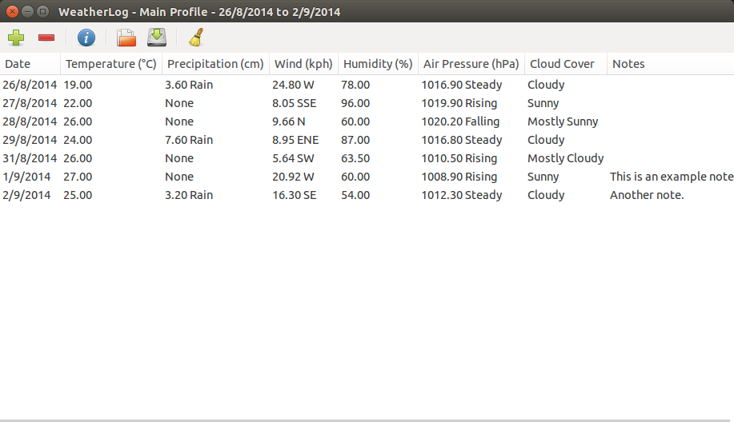
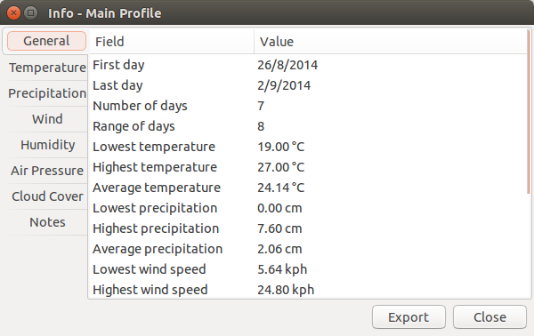

Viewing Info
After you have a few days of data entered, the program should look something like this (though this is all just example data):

This isn't really useful, though. You already know the data, so what's the point of entering it into the program when you could have just kept track of it on paper? WeatherLog isn't completely useless, however, as it can tell you more info about the weather data that has been entered.
Clicking on the toolbar button with the letter "i" on it will show a window with info about the data (selecting Info from the Info menu or pressing Control-I will work as well):

Here you can see an overview of the info. But what if you need something more specific that isn't shown here? You can also see information about each column by clicking on each of the tabs:

Each tab will show different types of information, depending on the column.
Clicking on the Export button allows you to save the data to an HTML file.
If you want to get info about a specific set of data, instead of all of it, you can use either the Info in Range feature or the Info for Selected Dates feature. The first allows you to select two dates and have all of the data between those dates used in the calculations, while the second allows you to select the exact dates to use, even if they are non-consecutive.